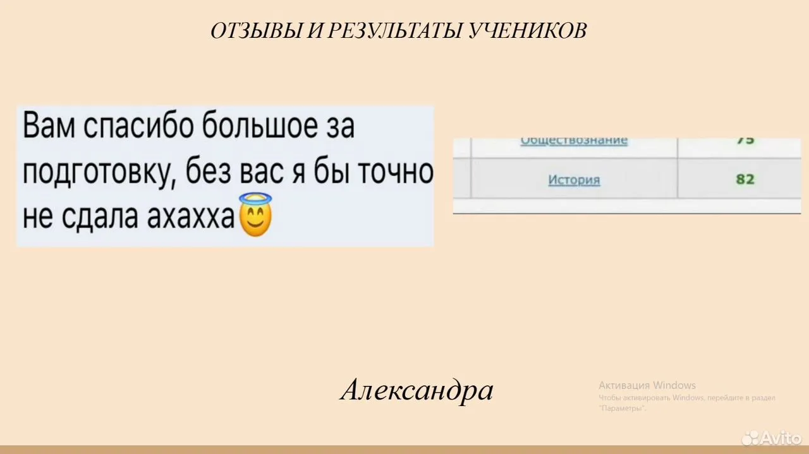
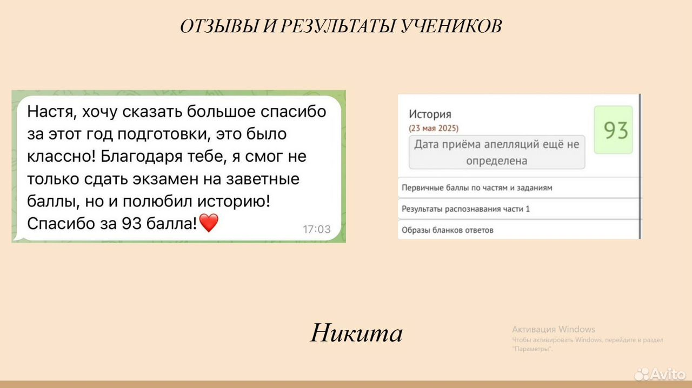
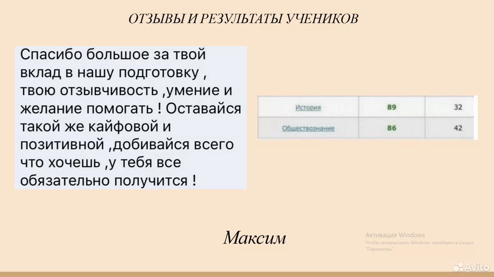
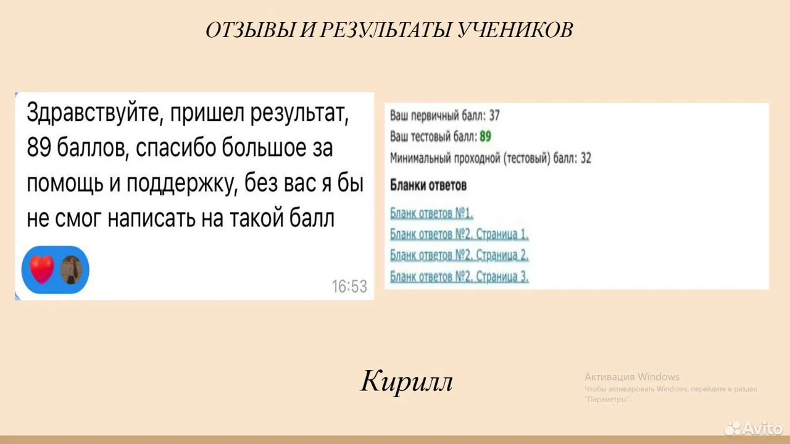

репетитор по истории · онлайн
История, которую
понимают, а не заучивают.
Помогу подготовиться к ЕГЭ и ОГЭ, разобраться в школьной программе и почувствовать уверенность в предмете.
Первый урок бесплатный, если решишь не продолжать. При продолжении обучения он оплачивается по выбранному тарифу.
Анастасия СычИстория · ЕГЭ · ОГЭ
по истории
преподавания
учеников
к истории
01 — обо мне
Привет! Я Анастасия — будущий историк и твой наставник.
Учусь в Московском педагогическом государственном университете на направлении «История и иностранный язык». Люблю превращать сложные темы в ясную, увлекательную картину.
✦ Золотая медаль
✦ Призёр ВСОШ по истории и праву
✦ Опыт работы в онлайн-школе
✦ Авторские конспекты и карточки
02 — форматы
Выбираем маршрут
под твою цель.
Подготовка
к ЕГЭ
Полный курс по кодификатору, практика и разбор сложных заданий.
1000 ₽ / часПодготовка
к ОГЭ
Системная работа с темами, тестами и экзаменационным форматом.
900 ₽ / часШкольная
программа
Повышение успеваемости, контрольные, самостоятельные и домашние задания.
от 800 ₽ / час03 — как проходят занятия
Без скучной зубрёжки.
На занятиях соединяем теорию, наглядность и регулярную практику — чтобы знания оставались надолго.
- 01
Разбираемся
Объясняю тему простыми словами, на примерах и с опорой на учебники.
- 02
Закрепляем
Используем авторские конспекты, карточки и понятные схемы.
- 03
Практикуемся
Решаем задания и подробно разбираем ошибки по критериям экзамена.
04 — материалы
Примеры презентаций
Фрагменты материалов, которые использую на занятиях.
05 — отзывы
Результаты, которыми горжусь.
Реальные отзывы учеников и их результаты на экзамене.




06 — первый шаг
Давай начнём
с истории.
Напиши в Telegram — обсудим цель и подберём удобный формат занятий.